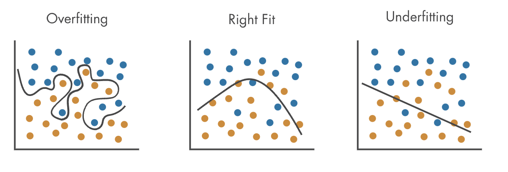

8 AI Training
Resources: Slides, Labs, Exercises
The process of training is central to developing accurate and useful AI systems using machine learning techniques. At a high level, training involves feeding data into machine learning algorithms so they can learn patterns and make predictions. However, effectively training models requires tackling a variety of challenges around data, algorithms, optimization of model parameters, and enabling generalization. In this chapter, we will dive into the nuances and considerations around training machine learning models.
Understand the fundamental mathematics of neural networks, including linear transformations, activation functions, loss functions, backpropagation, and optimization via gradient descent.
Learn how to effectively leverage data for model training through proper splitting into train, validation, and test sets to enable generalization.
Learn various optimization algorithms like stochastic gradient descent and adaptations like momentum and Adam that accelerate training.
Understand techniques for hyperparameter tuning and regularization to improve model generalization through reducing overfitting.
Learn proper weight initialization strategies matched to model architectures and activation choices that accelerate convergence.
Identify the bottlenecks posed by key operations like matrix multiplication during training and deployment.
Learn how hardware improvements like GPUs, TPUs, and specialized accelerators speed up critical math operations to accelerate training.
Understand parallelization techniques, both data and model parallelism, to distribute training across multiple devices and accelerate system throughput.
8.1 Introduction
Training is a critical process for developing accurate and useful AI systems using machine learning. The goal of training is to create a machine learning model that can generalize to new, unseen data, rather than memorizing the training examples. This is done by feeding training data into algorithms that learn patterns from these examples by adjusting internal parameters.
The algorithms minimize a loss function, which compares their predictions on the training data to the known labels or solutions, guiding the learning. Effective training often requires high-quality, representative training data sets that are large enough to capture variability in the real-world use cases.
It also requires choosing an algorithm suited to the task, whether that be a neural network for computer vision, a reinforcement learning algorithm for robotic control, or a tree-based method for categorical prediction. Careful tuning is needed for the model structure, such as neural network depth and width, and learning parameters like step size and regularization strength.
Techniques to prevent overfitting like regularization penalties and validation with held-out data are also important. Overfitting can occur when a model fits the training data too closely, failing to generalize to new data. This can happen if the model is too complex or trained for too long.
To avoid overfitting regularization techniques can help constrain the model. One regularization method is adding a penalty term to the loss function that discourages complexity, like the L2 norm of the weights. This penalizes large parameter values. Another technique is dropout, where a percentage of neurons are randomly set to zero during training. This reduces co-adaptation of neurons.
Validation methods also help detect and avoid overfitting. Part of the training data is held out from the training loop as a validation set. The model is evaluated on this data. If validation error increases while training error decreases, overfitting is occurring. The training can then be stopped early or regularized more strongly. Careful use of regularization and validation enables models to train to maximum capability without overfitting the training data.
Training takes significant computing resources, especially for deep neural networks used in computer vision, natural language processing, and other areas. These networks have millions of adjustable weights that must be tuned through extensive training. Hardware improvements and distributed training techniques have enabled training ever larger neural nets that can achieve human-level performance on some tasks.
In summary, some key points about training:
- Data is crucial: Machine learning models learn from examples in training data. More high-quality, representative data leads to better model performance. Data needs to be processed and formatted for training.
- Algorithms learn from data: Different algorithms (neural networks, decision trees, etc.) have different approaches to finding patterns in data. Choosing the right algorithm for the task is important.
- Training refines model parameters: Model training adjusts internal parameters to find patterns in data. Advanced models like neural networks have many adjustable weights. Training iteratively adjusts weights to minimize a loss function.
- Generalization is the goal: A model that overfits to the training data will not generalize well. Regularization techniques (dropout, early stopping, etc.) reduce overfitting. Validation data is used to evaluate generalization.
- Training takes compute resources: Training complex models requires significant processing power and time. Hardware improvements and distributed training across GPUs/TPUs have enabled advances.
We will walk you through these details in the rest of the sections. Understanding how to effectively leverage data, algorithms, parameter optimization, and generalization through thorough training is essential for developing capable, deployable AI systems that work robustly in the real world.
8.2 Mathematics of Neural Networks
Deep learning has revolutionized the fields of machine learning and artificial intelligence, enabling computers to learn complex patterns and make intelligent decisions. At the heart of the deep learning revolution is the neural network, which, as discussed in section 3 “Deep Learning Primer”, is a cornerstone in some of these advancements.
Neural networks are made up of simple functions layered on top of each other. Each layer takes in some data, performs some computation, and passes it to the next layer. These layers learn progressively high level features that are useful for the task the network is trained to perform. For example, in a network trained for image recognition, the input layer may take in pixel values, while the next layers may detect simple shapes like edges, then the layers after that may detect more complex shapes like noses or eyes, and so on. The final output layer classifies the image as a whole.
The network in a neural network refers to how these layers are connected. Each layer’s output is considered as a single neuron, and is connected to many other neurons in the layers preceding it, forming a “network”. The way these neurons interact with each other is determined by the weights between them, which model synaptic strengths similar to that of a brain’s neuron. The neural network is trained by adjusting these weights. Concretely, the weights are initially set randomly, then an input is fed in and the output is compared to the desired result, and finally the weights are then tweaked to make the network better. This process is repeated until the network reliably minimizes the loss, indicating it has learned the patterns in the data.
How is this process defined mathematically? Formally, neural networks are mathematical models that consist of alternating linear and nonlinear operations, parameterized by a set of learnable weights that are trained to minimize some loss function. This loss function is a measure of how good our model is with respect to fitting our training data, and it produces a numerical value when evaluated on our model against the training data. Training neural networks involve repeatedly evaluating the loss function on many different datapoints to get a measure of how good our model is, then continuously tweaking the weights of our model using backpropagation so that the loss decreases, which ultimately optimizes the model to fit our data.
8.2.1 Neural Network Notation
Diving into the details, the core of a neural network can be viewed as a sequence of alternating linear and nonlinear operations:
\[ L_i = W_i A_{i-1} \]
\[ A_i = F_i(L_{i}) \]
Why are the nonlinear operations necessary? If we only had linear layers the entire network is equivalent to just a single linear layer consisting of the product of the linear operators. Hence, the nonlinear functions play a key role in the power of neural networks as they enhance the neural network’s ability to fit functions.
Convolutions are also linear operators, and can be cast as a matrix multiplication.

where \(A_{0}\) is a vector input to the neural network (i.e: an image that we want the neural network to classify, or some other data that the neural network operates on), \(A_{n}\) (where \(n\) is the number of layers of the network) is the vector output of the neural network (i.e: a vector of size 10 in the case of classifying pictures of handwritten digits), \(W_i\)s are the weights of the neural network that are tweaked at training time to fit our data, and \(F_{i}\) is that layer’s nonlinear activation function (i.e: ReLU, softmax, etc). As defined, the intermediate output of the neural network is a vector of real-valued numbers with dimensions:
\[ L_i, A_i \in \mathbb{R}^{d_{i}} \]
where \(d_{i}\) is the number of neurons at layer \(i\); in the case of the first layer \(i=0\), \(d_{i}\) is the dimension of the input data, and in the last layer \(i=n\), \(d_{n}\) is the dimension of the output label, and anything in between can be set arbitrarily and may be viewed as the architecture of the neural network (i.e: dimensionality of the intermediate layers). The weights, which determine how each layer of the neural network interacts with each other, therefore are matrices of real numbers with shape
\[ W_i \in \mathbb{R}^{d_{i} \times d_{i-1}} \]
Our neural network, as defined, performs a sequence of linear and nonlinear operations on the input data (\(L_{0}\)), to optain predictions (\(L_{n}\)) which hopefully is a good answer to what we want the neural network to do on the input (i.e: classify if the input image is a cat or not). Our neural network may then be represented succinctly as a function \(N\) which takes in an input \(x \in \mathbb{R}^{d_0}\) parameterized by \(W_1, ..., W_n\):
\[ N(x; W_1, ... W_n) = \text{Let } A_0 = x, \text{ then output } A_n \]
Next we will see how to evaluate this neural network against training data by introducing a loss function.
8.2.2 Loss Function as a Measure of Goodness of Fit against Training Data
After defining our neural network, we are given some training data, which is a set of points \({(x_j, y_j)}\) for \(j=1..M\), and we want to evaluate how good our neural network is on fitting this data. To do this, we introduce a loss function, which is a function that takes the output of the neural network on a particular datapoint (\(N(x_j; W_1, ..., W_n)\)), and compares it against the “label” of that particular datapoint (the corresponding \(y_j\)), and outputs a single numerical scalar (i.e: one real number) that represents how “good” the neural network fit that particular data point; the final measure of how good the neural network is on the entire dataset is therefore just the average of the losses across all datapoints.
There are many different types of loss functions, for example, in the case of image classification, we might use the cross-entropy loss function, which tells us how good two vectors that represent classification predictions compare (i.e: if our prediction predicts that an image is more likely a dog, but the label says it is a cat, it will return a high “loss” indicating a bad fit).
Mathematically, this loss function is a function which takes in two real-valued vectors of the shape of the label, and outputs a single numerical scalar \[ L: \mathbb{R}^{d_{n}} \times \mathbb{R}^{d_{n}} \longrightarrow \mathbb{R} \]
and the loss across the entire dataset can be written as the average loss across all datapoints in the training data
Loss Function for Optimizing Neural Network Model on a Dataset \[ L_{full} = \frac{1}{M} \sum_{j=1}^{M} L(N(x_j; W_1,...W_n), y_j) \]
8.2.3 Training Neural Networks with Gradient Descent
Now that we have a measure of how good our network fits the training data, we can optimize the weights of the neural network to minimize this loss. At a high level, we tweak the parameters of the real-valued matrices \(W_i\)s so that the loss function \(L_{full}\) is minimized. Overall, our mathematical objective is
Neural Network Training Objective \[ min_{W_1, ..., W_n} L_{full} \] \[ = min_{W_1, ..., W_n} \frac{1}{M} \sum_{j=1}^{M} L(N(x_j; W_1,...W_n), y_j) \]
So how do we optimize this objective? Recall from calculus that minimizing a function can be done by taking the derivative of the function with respect to the input parameters and tweaking the parameters in the direction of the gradient. This technique is called gradient descent and concretely involves calculating the derivative of the loss function \(L_{full}\) with respect to \(W_1, ..., W_n\) to obtain a gradient for these parameters to take a step in, then updating these parameters in the direction of the gradient. Thus, we can train our neural network using gradient descent which repeatedly applies the update rule
Gradient Descent Update Rule \[ W_i := W_i - \lambda \frac{\partial L_{full}}{\partial W_i} \mbox{ for } i=1..n \]
In practice, the gradient is computed over a minibatch of datapoints, to improve computational efficiency. This is called stochastic gradient descent or batch gradient descent.
where \(\lambda\) is the stepsize or learning rate of our tweaks. In training our neural network, we repeatedly perform the step above until convergence, or when the loss no longer decreases. This prior approach is known as full gradient descent since we are computing the derivative with respect to the entire training data, and only then taking a single gradient step; a more efficient approach is to calculate the gradient with respect to just a random batch of datapoints and then taking a step, a process known as batch gradient descent or stochastic gradient descent (Robbins and Monro 1951), which is more efficient since now we are taking many more steps per pass of the entire training data. Next we will cover the mathematics behind computing the gradient of the loss function with respect to the \(W_i\)s, a process known as backpropagation.

8.2.4 Backpropagation
Training neural networks involve repeated applications of the gradient descent algorithm, which involves computing the derivative of the loss function with respect to the \(W_i\)s. How do we compute the derivative of the loss with respect to the \(W_i\)s given that the \(W_i\)s are nested functions of each other in a deep neural network? The trick is to leverage the chain rule: we can compute the derivative of the loss with respect to the \(W_i\)s by repeatedly applying the chain rule, in a complete process known as backpropagation. Specifically, we can calculate the gradients by computing the derivative of the loss with respect to the outputs of the last layer, then progressively use this to compute the derivative of the loss with respect to each prior layer, all the way to the input layer. This process starts from the end of the network (the layer closest to the output) and progresses backwards, and hence gets its name backpropagation.
Let’s break this down. We can compute the derivative of the loss with respect to the the outputs of each layer of the neural network by using repeated applications of the chain rule
\[ \frac{\partial L_{full}}{\partial L_{n}} = \frac{\partial A_{n}}{\partial L_{n}} \frac{\partial L_{full}}{\partial A_{n}} \]
\[ \frac{\partial L_{full}}{\partial L_{n-1}} = \frac{\partial A_{n-1}}{\partial L_{n-1}} \frac{\partial L_{n}}{\partial A_{n-1}} \frac{\partial A_{n}}{\partial L_{n}} \frac{\partial L_{full}}{\partial A_{n}} \]
or more generally
\[ \frac{\partial L_{full}}{\partial L_{i}} = \frac{\partial A_{i}}{\partial L_{i}} \frac{\partial L_{i+1}}{\partial A_{i}} ... \frac{\partial A_{n}}{\partial L_{n}} \frac{\partial L_{full}}{\partial A_{n}} \]
In what order should we perform this computation? It is preferrable from a computational perspective to perform the calculations from the end to the front (i.e: first compute \(\frac{\partial L_{full}}{\partial A_{n}}\) then the prior terms, rather than start in the middle) since this avoids materializing and computing large jacobians. This is because \(\frac{\partial L_{full}}{\partial A_{n}}\) is a vector, hence any matrix operation that includes this term has an output that is squished to be a vector. Thus performing the computation from the end avoids large matrix-matrix multiplications by ensuring that the intermediate products are vectors.
In our notation, we assume the intermediate activations \(A_{i}\) are column vectors, rather than row vectors, hence the chain rule is \(\frac{\partial L}{\partial L_{i}} = \frac{\partial L_{i+1}}{\partial L_{i}} ... \frac{\partial L}{\partial L_{n}}\) rather than \(\frac{\partial L}{\partial L_{i}} = \frac{\partial L}{\partial L_{n}} ... \frac{\partial L_{i+1}}{\partial L_{i}}\)
After computing the derivative of the loss with respect to the output of each layer, we can easily obtain the derivative of the loss with respect to the parameters, again using the chain rule:
\[ \frac{\partial L_{full}}{W_{i}} = \frac{\partial L_{i}}{\partial W_{i}} \frac{\partial L_{full}}{\partial L_{i}} \]
And this is ultimately how the derivatives of the layers’ weights are computed using backpropagation! What does this concretely look like in a specific example? Below we walk through a specific example on a simple 2 layer neural network, on a regression task using a MSE loss function, with 100-dimensional inputs and a 30-dimensional hidden layer:
Example of Backpropagation
Suppose we have a two-layer neural network \[ L_1 = W_1 A_{0} \] \[ A_1 = ReLU(L_1) \] \[ L_2 = W_2 A_{1} \] \[ A_2 = ReLU(L_2) \] \[ NN(x) = \mbox{Let } A_{0} = x \mbox{ then output } A_2 \] where \(W_1 \in \mathbb{R}^{30 \times 100}\) and \(W_2 \in \mathbb{R}^{1 \times 30}\). Furthermore suppose we use the MSE loss function: \[ L(x, y) = (x-y)^2 \] We wish to compute \[ \frac{\partial L(NN(x), y)}{\partial W_i} \mbox{ for } i=1,2 \] Note the following: \[ \frac{\partial L(x, y)}{\partial x} = 2 \times (x-y) \] \[ \frac{\partial ReLU(x)}{\partial x} \delta = \left\{\begin{array}{lr} 0 & \text{for } x \leq 0 \\ 1 & \text{for } x \geq 0 \\ \end{array}\right\} \odot \delta \] \[ \frac{\partial WA}{\partial A} \delta = W^T \delta \] \[ \frac{\partial WA}{\partial W} \delta = \delta A^T \] Then we have \[ \frac{\partial L(NN(x), y)}{\partial W_2} = \frac{\partial L_2}{\partial W_2} \frac{\partial A_2}{\partial L_2} \frac{\partial L(NN(x), y)}{\partial A_2} \] \[ = (2L(NN(x) - y) \odot ReLU'(L_2)) A_1^T \] and \[ \frac{\partial L(NN(x), y)}{\partial W_1} = \frac{\partial L_1}{\partial W_1} \frac{\partial A_1}{\partial L_1} \frac{\partial L_2}{\partial A_1} \frac{\partial A_2}{\partial L_2} \frac{\partial L(NN(x), y)}{\partial A_2} \] \[ = [ReLU'(L_1) \odot (W_2^T [2L(NN(x) - y) \odot ReLU'(L_2)])] A_0^T \]
Double check your work by making sure that the shapes are correct!
- All hadamard products (\(\odot\)) should operate on tensors of the same shape
- All matrix multiplications should operate on matrices that share a common dimension (i.e: m by n, n by k)
- All gradients with respect to the weights should have the same shape as the weight matrices themselves
The entire backpropagation process can be complex, especially for networks that are very deep. Fortunately, machine learning frameworks like PyTorch support automatic differentiation, which performs backpropagation for us. In these machine learning frameworks we simply need to specify the forward pass, and the derivatives will be automatically computed for us. Nevertheless, it is beneficial to understand the theoretical process that is happening under the hood in these machine-learning frameworks.
As seen above, intermediate activations \(A_i\) are re-used in backpropagation. To improve performance, these activations are cached from the forward pass to avoid recomputing them. However, this means that activations must be kept in memory between the forward and backward passes, leading to higher memory usage. If the network and batchsize is large, this may lead to memory issues. Similarly, the derivatives with respect to each layer’s outputs are cached to avoid recomputation.
8.3 Differentiable Computation Graphs
In general, stochastic gradient descent using backpropagation can be performed on any computational graph that a user may define, provided that the operations of the computation are differentiable. As such, generic deep learning libraries like PyTorch and Tensorflow allow users to specify their computational process (i.e: neural networks) as a computational graph. Backpropagation is automatically performed via automatic differentiation when performing stochast gradient descent on these computational graphs. Framing AI training as an optimization problem on differentiable computation graphs is a general way to understand what is happening under the hood with deep learning systems.

8.4 Training Data
To enable effective training of neural networks, the available data must be split into training, validation, and test sets. The training set is used to train the model parameters. The validation set evaluates the model during training to tune hyperparameters and prevent overfitting. The test set provides an unbiased final evaluation of the trained model’s performance.
Maintaining clear splits between train, validation, and test sets with representative data in each is crucial to properly training, tuning, and evaluating models to achieve the best real-world performance. To this end, we will learn about the common pitfalls or mistakes that people make in creating these data splits.
Here is a summary table for training, validation, and test data splits:
| Data Split | Purpose | Typical Size |
|---|---|---|
| Training Set | Train the model parameters | 60-80% of total data |
| Validation Set | Evaluate model during training to tune hyperparameters and prevent overfitting | ∼20% of total data |
| Test Set | Provide unbiased evaluation of final trained model | ∼20% of total data |
8.4.1 Dataset Splits
Training Set
The training set is used to actually train the model. It is the largest subset consisting of typically 60-80% of the total data. The model sees and learns from the training data in order to make predictions. A sufficiently large and representative training set is required for the model to effectively learn the underlying patterns.
Validation Set
The validation set is used to evaluate the model during training, usually after each epoch. Typically 20% of the data is allocated for the validation set. The model does not learn or update its parameters based on the validation data. It is used to tune hyperparameters and make other tweaks to improve training. Monitoring metrics like loss and accuracy on the validation set prevents overfitting on just the training data.
Test Set
The test set acts as a completely unseen dataset that the model did not see during training. It is used to provide an unbiased evaluation of the final trained model. Typically 20% of the data is reserved for testing. Maintaining a hold-out test set is vital for obtaining an accurate estimate of how the trained model would perform on real world unseen data. Data leakage from the test set must be avoided at all costs.
The relative proportions of the training, validation and test sets can vary based on data size and application. But following the general guideline of a 60/20/20 split is a good starting point. Careful splitting of data ensures models are properly trained, tuned and evaluated to achieve the best performance.
8.4.2 Common Pitfalls and Mistakes
Insufficient Training Data
Allocating too little data to the training set is a common mistake when splitting data that can severely impact model performance. If the training set is too small, the model will not have enough samples to effectively learn the true underlying patterns in the data. This leads to high variance and causes the model to fail to generalize well to new data.
For example, if you are training an image classification model to recognize handwritten digits, providing only 10 or 20 images per digit class would be completely inadequate. The model would struggle to capture the wide variances in writing styles, rotations, stroke widths and other variations with so few examples.
As a rule of thumb, the training set size should be at least in the hundreds or thousands of examples for most machine learning algorithms to work effectively. For deep neural networks, especially those using convolutional layers, the training set often needs to be in the tens or hundreds of thousands due to the large number of parameters.
Insufficient training data typically manifests in symptoms like high error rates on validation/test sets, low model accuracy, high variance, and overfitting on the small training set samples. Collecting more quality training data is the solution. Data augmentation techniques can also help virtually increase training data size for images, audio etc.
Carefully factoring in the model complexity and problem difficulty when allocating training samples is important to ensure sufficient data is available for the model to learn successfully. Following guidelines on minimum training set sizes for different algorithms is also recommended. Insufficient training data is a fundamental issue that will undermine the overall success of any machine learning application.

On the flip side, if the model is not trained enough on the data, the model may underfit the data fail to learn the salient aspsects of the task at hand.

Data Leakage Between Sets
Data leakage refers to the unintentional transfer of information between the training, validation, and test sets. This violates the fundamental assumption that the splits are completely separated. Data leakage leads to seriously compromised evaluation results and inflated performance metrics.
A common way data leakage can occur is if some samples from the test set inadvertently get included in the training data. Now when evaluating on the test set, the model has already seen some of the data which gives overly optimistic scores. For example, if 2% of the test data leaks into the training set of a binary classifier, it can result in a accuracy boost of up to 20%!
More subtle forms of leakage can happen if the data splits are not done carefully. If the splits are not properly randomized and shuffled, samples close to each other in the dataset may end up across different splits. This creates information bleed through based on proximity in the dataset. Time series data is especially vulnerable unless special cross validation techniques are used.
Preventing data leakage requires creating solid separation between splits - no sample should exist in more than one split. Shuffling and randomized splitting help create robust divisions. Cross validation techniques can be used for more rigorous evaluation. Detecting leakage is difficult buttelltale signs include models doing way better on test vs. validation data.
Data leakage severely compromises the validity of evaluation because the model has already partially seen the test data. No amount of tuning or complex architectures can substitute for clean data splits. It is better to be conservative and create complete separation between splits to avoid this fundamental mistake in machine learning pipelines.
Small or Unrepresentative Validation Set
The validation set is used to evaluate models during training and for hyperparameter tuning. If the validation set is too small or not representative of the real data distribution, it will not provide reliable or stable evaluations during training. This makes model selection and tuning more difficult.
For example, if the validation set only contains 100 samples, metrics calculated on it will have high variance. The accuracy may fluctuate up to 5-10% between epochs just due to noise. This makes it difficult to know if a drop in validation accuracy is due to overfitting or natural variance. With a larger validation set of say 1000 samples, the metrics will be much more stable.
Additionally, if the validation set is not representative, perhaps missing certain subclasses, the estimated skill of the model may be inflated. This could lead to poor choices of hyperparameters or stopping training prematurely. Models selected based on such biased validation sets do not generalize well to real data.
A good rule of thumb is the validation set size should be at least several hundred samples, and up to 10-20% size of the training set. The splits should also be stratified, especially if working with imbalanced datasets. A larger validation set that well represents the original data characteristics is essential for proper model selection and tuning.
Care should be taken that the validation set is also not too large, leaving insufficient samples for training. Overall, the validation set is a critical piece of the data splitting process and care should be taken to avoid the pitfalls of small, inadequate samples that negatively impact model development.
Reusing the Test Set Multiple Times
The test set is designed to provide an unbiased evaluation of the fully-trained model only once at the end of the model development process. Reusing the test set multiple times during development for model evaluation, hyperparameter tuning, model selection etc. can result in overfitting on the test data.
If the test set is reused as part of the validation process, the model may start to see and learn from the test samples. This coupled with intentionally or unintentionally optimizing model performance on the test set can artificially inflate metrics like accuracy.
For example, if the test set is used repeatedly for model selection out of 5 architectures, the model may achieve 99% test accuracy just by memorizing the samples rather than learning generalizable patterns. However, deployed in the real world, the accuracy could drop to 60% on new data.
Best practice is to interact with the test set only once at the very end to report unbiased metrics on how the final tuned model would perform in the real world. The validation set should be used for all parameter tuning, model selection, early stopping etc. while developing the model.
Maintaining the complete separation of training/validation from the test set is essential to obtain accurate estimates of model performance. Even minor deviations from single use of the test set could positively bias results and metrics, providing an overly optimistic view of real world efficacy.
Same Data Splits Across Experiments
When comparing different machine learning models or experimenting with various architectures and hyperparameters, using the same data splits for training, validation and testing across the different experiments can introduce bias and invalidate the comparisons.
If the same splits are reused, the evaluation results may be overly correlated and not provide an accurate measure of which model performs better. For example, a certain random split of the data may happen to favor model A over model B irrespective of the algorithms. Reusing this split will then be biased towards model A.
Instead, the data splits should be randomized or shuffled for each experimental iteration. This ensures that randomness in the sampling of the splits does not confer an unfair advantage to any model.
With different splits per experiment, the evaluation becomes more robust. Each model is tested on a wide range of test sets drawn randomly from the overall population. This smoothens out variation and removes correlation between results.
Proper practice is to set a random seed before splitting the data for each experiment. Splitting should be carried out after any shuffling/resampling as part of the experimental pipeline. Carrying out comparisons on the same splits violates the i.i.d (independent and identically distributed) assumption required for statistical validity.
Unique splits are essential for fair model comparisons. Though more compute intensive, randomized allocation per experiment removes sampling bias and enables valid benchmarking. This highlights the true differences in model performance irrespective of a particular split’s characteristics.
Information Leakage Between Sets
Information leakage between the training, validation and test sets occurs when information from one set inadvertently bleeds into another set. This could happen due to flaws in the data splitting process and violates the assumption that the sets are mutually exclusive.
For example, consider a dataset sorted chronologically. If a simple random split is performed, samples close to each other in the dataset may end up in different splits. Models could then learn from ‘future’ data if test samples are leaked into the training set.
Similarly, if the splits are not properly shuffled, distribution biases may persist across sets. The training set may not contain certain outliers that end up in the test set only, compromising generalization. Issues like class imbalance may also get amplified if splitting is not stratified.
Another case is when datasets have linked samples that are inherently connected, such as graphs, networks or time series data. Naive splitting may isolate connected nodes or time steps into different sets. Models can make invalid assumptions based on partial information.
Preventing information leakage requires awareness of the structure of the dataset and relationships between samples. Shuffling, stratification and grouped splitting of related samples can help mitigate leakage. Proper cross validation procedures should be followed, being mindful of temporal or sample proximity.
Subtle leakage of information between sets undermines model evaluation and training. It creates misleading results on model effectiveness. Data splitting procedures should account for sample relationships and distribution differences to ensure mutual exclusivity between sets.
Failing to Stratify Splits
When splitting data into training, validation and test sets, failing to stratify the splits can result in uneven representation of the target classes across the splits and introduce sampling bias. This is especially problematic for imbalanced datasets.
Stratified splitting involves sampling data points such that the proportion of output classes is approximately preserved in each split. For example, if performing a 70/30 train-test split on a dataset with 60% negative and 40% positive samples, stratification ensures ~60% negative and ~40% positive examples in both training and test sets.
Without stratification, due to random chance, the training split could end up with 70% positive while test has 30% positive samples. The model trained on this skewed training distribution will not generalize well. Class imbalance also compromises model metrics like accuracy.
Stratification works best when done using the labels though proxies like clustering can be used for unsupervised learning. It becomes essential for highly skewed datasets with rare classes that could easily get omitted from splits.
Libraries like Scikit-Learn have stratified splitting methods inbuilt. Failing to use them could inadvertently introduce sampling bias and hurt model performance on minority groups. The overall class balance should be examined after performing the splits to ensure even representation across the splits.
Stratification provides a balanced dataset for both model training and evaluation. Though simple random splitting is easy, being mindful of stratification needs, especially for real-world imbalanced data, results in more robust model development and evaluation.
Ignoring Time Series Dependencies
Time series data has an inherent temporal structure with observations depending on past context. Naively splitting time series data into train and test sets without accounting for this dependency leads to data leakage and lookahead bias.
For example, simply splitting a time series into the first 70% training and last 30% as test data will contaminate the training data with future data points. The model can use this information to “peek” ahead during training.
This results in overly optimistic evaluation of the model’s performance. The model may appear to forecast the future accurately but has actually implicitly learned based on future data. This does not translate to real world performance.
Proper time series cross validation techniques should be used to preserve order and dependency, such as forward chaining. The test set should only contain data points from a future time window that the model did not get exposed to for training.
Failing to account for temporal relationships leads to invalid assumptions of causality. The model may also not learn how to extrapolate forecasts further into the future if the training data contains future points.
Maintaining the temporal flow of events and avoiding lookahead bias is key for properly training and testing time series models to ensure they can truly predict future patterns and not just memorize past training data.
No Unseen Data for Final Evaluation
A common mistake when splitting data is failing to keep aside some portion of the data just for final evaluation of the completed model. All of the data is used for training, validation and test sets during development.
This leaves no unseen data to get an unbiased estimate of how the final tuned model would perform in the real world. The metrics on the test set used during development may not fully reflect actual model skill.
For example, choices like early stopping and hyperparameter tuning are often optimized based on performance on the test set. This couples the model to the test data. An unseen dataset is needed to break this coupling and get true real-world metrics.
Best practice is to reserve a portion like 20-30% of the full dataset solely for final model evaluation. This data should not be used for any validation, tuning or model selection during development.
Saving some unseen data allows evaluating the completely trained model as a black box on real-world like data. This provides reliable metrics to decide if the model is truly ready for production deployment.
Failing to keep an unseen hold-out set for final validation risks optimistically biasing results and overlooking potential failures before model release. Having some fresh data provides a final sanity check on real-world efficacy.
Overoptimizing on the Validation Set
The validation set is meant to guide the model training process, not serve as additional training data. Overoptimizing on the validation set to maximize performance metrics treats it more like a secondary training set and leads to inflated metrics and poor generalization.
For example, techniques like extensively tuning hyperparameters or adding data augmentations targeted to boost validation accuracy can cause the model to fit too closely to the validation data. The model may achieve 99% validation accuracy but only 55% test accuracy.
Similarly, reusing the validation set for early stopping can also optimize the model specifically for that data. Stopping at the best validation performance overfits to noise and fluctuations caused by the small validation size.
The validation set serves as a proxy to tune and select models. But the end goal remains maximizing performance on real-world data, not the validation set. Minimizing the loss or error on validation data does not automatically translate to good generalization.
A good approach is to keep the validation set use minimal - hyperparameters can be tuned coarsely first on training data for example. The validation set guides the training, but should not influence or alter the model itself. It is a diagnostic, not an optimization tool.
Care should be taken to not overfit when assessing performance on the validation set. Tradeoffs are needed to build models that perform well on the overall population, not overly tuned to the validation samples.
8.5 Optimization Algorithms
Stochastic gradient descent (SGD) is a simple yet powerful optimization algorithm commonly used to train machine learning models. SGD works by estimating the gradient of the loss function with respect to the model parameters using a single training example, and then updating the parameters in the direction that reduces the loss.
While conceptually straightforward, SGD suffers from a few shortcomings. First, choosing a proper learning rate can be difficult - too small and progress is very slow, too large and parameters may oscillate and fail to converge. Second, SGD treats all parameters equally and independently, which may not be ideal in all cases. Finally, vanilla SGD uses only first order gradient information which results in slow progress on ill-conditioned problems.
8.5.1 Optimizations
Over the years, various optimizations have been proposed to accelerate and improve upon vanilla SGD. Ruder (2016) gives an excellent overview of the different optimizers. Briefly, several commonly used SGD optimization techniques include:
Momentum: Accumulates a velocity vector in directions of persistent gradient across iterations. This helps accelerate progress by dampening oscillations and maintains progress in consistent directions.
Nesterov Accelerated Gradient (NAG): A variant of momentum that computes gradients at the “look ahead” position rather than the current parameter position. This anticipatory update prevents overshooting while the momentum maintains the accelerated progress.
RMSProp: Divides the learning rate by an exponentially decaying average of squared gradients. This has a similar normalizing effect as Adagrad but does not accumulate the gradients over time, avoiding a rapid decay of learning rates (Hinton 2017).
Adagrad: An adaptive learning rate algorithm that maintains a per-parameter learning rate that is scaled down proportionate to the historical sum of gradients on each parameter. This helps eliminate the need to manually tune learning rates (Duchi, Hazan, and Singer 2010).
Adadelta: A modification to Adagrad which restricts the window of accumulated past gradients thus reducing the aggressive decay of learning rates (Zeiler 2012).
Adam: - Combination of momentum and rmsprop where rmsprop modifies the learning rate based on average of recent magnitudes of gradients. Displays very fast initial progress and automatically tunes step sizes (Kingma and Ba 2015).
Of these methods, Adam is widely considered the go-to optimization algorithm for many deep learning tasks, consistently outperforming vanilla SGD in terms of both training speed and performance. Other optimizers may be better suited in some cases, particularly for simpler models.
8.5.2 Trade-offs
Here is a pros and cons table for some of the main optimization algorithms for neural network training:
| Algorithm | Pros | Cons |
|---|---|---|
| Momentum | Faster convergence due to acceleration along gradients Less oscillation than vanilla SGD | Requires tuning of momentum parameter |
| Nesterov Accelerated Gradient (NAG) | Faster than standard momentum in some cases Anticipatory updates prevent overshooting | More complex to understand intuitively |
| Adagrad | Eliminates need to manually tune learning rates Performs well on sparse gradients | Learning rate may decay too quickly on dense gradients |
| Adadelta | Less aggressive learning rate decay than Adagrad | Still sensitive to initial learning rate value |
| RMSProp | Automatically adjusts learning rates Works well in practice | No major downsides |
| Adam | Combination of momentum and adaptive learning rates Efficient and fast convergence | Slightly worse generalization performance in some cases |
| AMSGrad | Improvement to Adam addressing generalization issue | Not as extensively used/tested as Adam |
8.5.3 Benchmarking Algorithms
No single method is best for all problem types. This means we need a comprehensive benchmarking to identify the most effective optimizer for specific datasets and models. The performance of algorithms like Adam, RMSProp, and Momentum varies due to factors such as batch size, learning rate schedules, model architecture, data distribution, and regularization. These variations underline the importance of evaluating each optimizer under diverse conditions.
Take Adam, for example, which often excels in computer vision tasks, in contrast to RMSProp that may show better generalization in certain natural language processing tasks. Momentum’s strength lies in its acceleration in scenarios with consistent gradient directions, whereas Adagrad’s adaptive learning rates are more suited for sparse gradient problems.
This wide array of interactions among different optimizers demonstrates the challenge in declaring a single, universally superior algorithm. Each optimizer has unique strengths, making it crucial to empirically evaluate a range of methods to discover their optimal application conditions.
A comprehensive benchmarking approach should assess not just the speed of convergence but also factors like generalization error, stability, hyperparameter sensitivity, and computational efficiency, among others. This entails monitoring training and validation learning curves across multiple runs and comparing optimizers on a variety of datasets and models to understand their strengths and weaknesses.
AlgoPerf, introduced by Dahl et al. (2021), addresses the need for a robust benchmarking system. This platform evaluates optimizer performance using criteria such as training loss curves, generalization error, sensitivity to hyperparameters, and computational efficiency. AlgoPerf tests various optimization methods, including Adam, LAMB, and Adafactor, across different model types like CNNs and RNNs/LSTMs on established datasets. It utilizes containerization and automatic metric collection to minimize inconsistencies and allows for controlled experiments across thousands of configurations, providing a reliable basis for comparing different optimizers.
The insights gained from AlgoPerf and similar benchmarks are invaluable for guiding the optimal choice or tuning of optimizers. By enabling reproducible evaluations, these benchmarks contribute to a deeper understanding of each optimizer’s performance, paving the way for future innovations and accelerated progress in the field.
8.6 Hyperparameter Tuning
Hyperparameters are important settings in machine learning models that have a large impact on how well your models ultimately perform. Unlike other model parameters that are learned during training, hyperparameters are specified by the data scientists or machine learning engineers prior to training the model.
Choosing the right hyperparameter values is crucial for enabling your models to effectively learn patterns from data. Some examples of key hyperparameters across ML algorithms include:
- Neural networks: Learning rate, batch size, number of hidden units, activation functions
- Support vector machines: Regularization strength, kernel type and parameters
- Random forests: Number of trees, tree depth
- K-means: Number of clusters
The problem is that there are no reliable rules-of-thumb for choosing optimal hyperparameter configurations - you typically have to try out different values and evaluate performance. This process is called hyperparameter tuning.
In the early years of modern deep learning, researchers were still grappling with unstable and slow convergence issues. Common pain points included training losses fluctuating wildly, gradients exploding or vanishing, and extensive trial-and-error needed to train networks reliably. As a result, an early focal point was using hyperparameters to control model optimization. For instance, seminal techniques like batch normalization allowed much faster model convergence by tuning aspects of internal covariate shift. Adaptive learning rate methods also mitigated the need for extensive manual schedules. These addressed optimization issues during training like uncontrolled gradient divergence. Carefully adapted learning rates are also the primary control factor even today for achieving rapid and stable convegence.
As computational capacity expanded exponentially in subsequent years, much larger models could be trained without falling prey to pure numerical optimization issues. The focus shifted towards generalization - though efficient convergence was a core prerequisite. State-of-the-art techniques like Transformers brought in parameters in billions. At such sizes, hyperparameters around capacity, regularization, ensembling etc. took center stage for tuning rather than only raw convergence metrics.
The lesson is that understanding acceleration and stability of the optimization process itself constitutes the groundwork. Even today initialization schemes, batch sizes, weight decays and other training hyperparameters remain indispensable. Mastering fast and flawless convergence allows practitioners to expand focus on emerging needs around tuning for metrics like accuracy, robustness and efficiency at scale.
8.6.1 Search Algorithms
When it comes to the critical process of hyperparameter tuning, there are several sophisticated algorithms machine learning practitioners rely on to systematically search through the vast space of possible model configurations. Some of the most prominent hyperparameter search algorithms include:
Grid Search: The most basic search method, where you manually define a grid of values to check for each hyperparameter. For example, checking learning rates = [0.01, 0.1, 1] and batch sizes = [32, 64, 128]. The key advantage is simplicity, but exploring all combinations leads to exponential search space explosion. Best for fine-tuning a few params.
Random Search: Instead of a grid, you define a random distribution per hyperparameter to sample values from during search. It is more efficient at searching a vast hyperparameter space. However, still somewhat arbitrary compared to more adaptive methods.
Bayesian Optimization: An advanced probabilistic approach for adaptive exploration based on a surrogate function to model performance over iterations. It is very sample efficient - finds highly optimized hyperparameters in fewer evaluation steps. Requires more investment in setup (Snoek, Larochelle, and Adams 2012).
Evolutionary Algorithms: Mimic natural selection principles - generate populations of hyperparameter combinations, evolve them over time based on performance. These algorithms offer robust search capabilities better suited for complex response surfaces. But many iterations required for reasonable convergence.
Neural Architecture Search: An approach to designing well-performing architectures for neural networks. Traditionally, NAS approaches use some form of reinforcement learning to propose neural network architectures which are then repeatedly evaluated (Zoph and Le 2023).
8.6.2 System Implications
Hyperparameter tuning can significantly impact time to convergence during model training, directly affecting overall runtime. Selecting the right values for key training hyperparameters is crucial for efficient model convergence. For example, the learning rate hyperparameter controls the step size during gradient descent optimization. Setting a properly tuned learning rate schedule ensures the optimization algorithm converges quickly towards a good minimum. Too small a learning rate leads to painfully slow convergence, while too large a value causes the losses to fluctuate wildly. Proper tuning ensures rapid movement towards optimal weights and biases.
Similarly, batch size for stochastic gradient descent impacts convergence stability. The right batch size smooths out fluctuations in parameter updates to approach the minimum faster. Insufficient batch sizes cause noisy convergence, while large batch sizes fail to generalize and also slow down convergence due to less frequent parameter updates. Tuning hyperparameters for faster convergence and reduced training duration has direct implications on cost and resource requirements for scaling machine learning systems:
Lower computatioanal costs: Shorter time to convergence means lower computational costs for training models. ML training often leverages large cloud compute instances like GPU and TPU clusters that incur heavy charges per hour. Minimizing training time directly brings down this resource rental cost that tends to dominate ML budgets for organizations. Quicker iteration also lets data scientists experiment more freely within the same budget.
Reduced training time: Reduced training time unlocks opportunities to train more models using the same computational budget. Optimized hyperparameters stretch available resources further allowing businesses to develop and experiment with more models under resource constraints to maximize performance.
Resource efficiency: Quicker training allows allocating smaller compute instances in cloud since models require access to the resources for a shorter duration. For example, a 1-hour training job allows using less powerful GPU instances compared to multi-hour training requiring sustained compute access over longer intervals. This achieves cost savings especially for large workloads.
There are other benefits as well. For instance, faster convergence reduces pressure on ML engineering teams around provisioning training resources. Simple model retraining routines can use lower powered resources as opposed to requesting for access to high priority queues for constrained production-grade GPU clusters. This frees up deployment resources for other applications.
8.6.3 Auto Tuners
There are a wide array of commercial offerings to help with hyperparameter tuning given how important it is. We will briefly touch on two examples focused on optimization for machine learning models targeting microcontrollers and another focused on cloud-scale ML.
BigML
There are several commercial auto tuning platforms available to deal with this problem. One such solution is Google’s Vertex AI Cloud, which has extensive integrated support for state-of-the-art tuning techniques.
One of the most salient capabilities offered by Google’s Vertex AI managed machine learning platform is efficient, integrated hyperparameter tuning for model development. Successfully training performant ML models requires identifying optimal configurations for a set of external hyperparameters that dictate model behavior - which poses a challenging high-dimensional search problem. Vertex AI aims to simplify this through Automated Machine Learning (AutoML) tooling.
Specifically, data scientists can leverage Vertex AI’s hyperparameter tuning engines by providing a labeled dataset and choosing a model type such as Neural Network or Random Forest classifier. Vertex launches a Hyperparameter Search job transparently on the backend, fully handling resource provisioning, model training, metric tracking and result analysis automatically using advanced optimization algorithms.
Under the hood, Vertex AutoML employs a wide array of different search strategies to intelligently explore the most promising hyperparameter configurations based on previous evaluation results. Compared to standard Grid Search or Random Search methods, Bayesian Optimization offers superior sample efficiency requiring fewer training iterations to arrive at optimized model quality. For more complex neural architecture search spaces, Vertex AutoML utilizes Population Based Training approaches which evolve candidate solutions over time analogous to natural selection principles.
Vertex AI aims to democratize state-of-the-art hyperparameter search techniques at cloud scale for all ML developers, abstracting away the underlying orchestration and execution complexity. Users focus solely on their dataset, model requirements and accuracy goals while Vertex manages the tuning cycle, resource allocation, model training, accuracy tracking and artifact storage under the hood. The end result is getting deployment-ready, optimized ML models faster for the target problem.
TinyML
Edge Impulse’s Efficient On-device Neural Network Tuner (EON Tuner) is an automated hyperparameter optimization tool designed specifically for developing machine learning models for microcontrollers. The EON Tuner streamlines the model development process by automatically finding the best neural network configuration for efficient and accurate deployment on resource-constrained devices.
The key functionality of the EON Tuner is as follows. First, developers define the model hyperparameters, such as number of layers, nodes per layer, activation functions, and learning rate annealing schedule. These parameters constitute the search space that will be optimized. Next, the target microcontroller platform is selected, providing embedded hardware constraints. The user can also specify optimization objectives, such as minimizing memory footprint, lowering latency, reducing power consumption or maximizing accuracy.
With the search space and optimization goals defined, the EON Tuner leverages Bayesian hyperparameter optimization to intelligently explore possible configurations. Each prospective configuration is automatically implemented as a full model specification, trained and evaluated for quality metrics. The continual process balances exploration and exploitation to arrive at optimized settings tailored to the developer’s chosen chip architecture and performance requirements.
By automatically tuning models for embedded deployment, the EON Tuner frees machine learning engineers from the demandingly iterative process of hand-tuning models. The tool integrates seamlessly into the Edge Impulse workflow for taking models from concept to efficiently optimized implementations on microcontrollers. The expertise encapsulated in EON Tuner regarding ML model optimization for microcontrollers ensures beginner and experienced developers alike can rapidly iterate to models fitting their project needs.
8.7 Regularization
Regularization is a critical technique for improving the performance and generalizability of machine learning models in applied settings. It refers to mathematically constraining or penalizing model complexity to avoid overfitting the training data. Without regularization, complex ML models are prone to overfitting to the dataset and memorize peculiarities and noise in the training set, rather than learning meaningful patterns. They may achieve high training accuracy, but perform poorly when evaluating new unseen inputs.
Regularization helps address this problem by placing constraints that favor simpler, more generalizable models that don’t latch onto sampling errors. Techniques like L1/L2 regularization directly penalize large parameter values during training, forcing the model to use the smallest parameters that can adequately explain the signal. Early stopping rules halt training when validation set performance stops improving - before the model starts overfitting.
Appropriate regularization is crucial when deploying models to new user populations and environments where distribution shifts are likely. For example, an irregularized fraud detection model trained at a bank may work initially but accrue technical debt over time as new fraud patterns emerge.
Regularizing complex neural networks also allows computational advantages - smaller models require less data augmentation, compute power, and data storage. Regularization allows more efficient AI systems, where accuracy, robustness, and resource management are balanced thoughtfully against training set limitations.
Several powerful regularization techniques are commonly used to improve model generalization. Architecting the optimal strategy requires understanding how each method affects model learning and complexity.
8.7.1 L1 and L2
Two of the most widely used regularization forms are L1 and L2 regularization. Both penalize model complexity by adding an extra term to the cost function optimized during training. This term grows larger as model parameters increase.
L2 regularization, also known as ridge regression, adds the sum of squared magnitudes of all parameters, multiplied by a coefficient α. This quadratic penalty curtails extreme parameter values more aggressively than L1 techniques. Implementation requires only changing the cost function and tuning α.
\[R_{L2}(\Theta) = \alpha \sum_{i=1}^{n}\theta_{i}^2\]
Where:
- \(R_{L2}(\Theta)\) - The L2 regularization term that is added to the cost function
- \(\alpha\) - The L2 regularization hyperparameter that controls the strength of regularization
- \(\theta_{i}\) - The ith model parameter
- \(n\) - The number of parameters in the model
- \(\theta_{i}^2\) - The square of each parameter
And the full L2 regularized cost function is:
\[J(\theta) = L(\theta) + R_{L2}(\Theta)\]
Where:
- \(L(\theta)\) - The original unregularized cost function
- \(J(\theta)\) - The new regularized cost function
Both L1 and L2 regularization penalize large weights in the neural network, however, the key difference between L1 and L2 regularization is that L2 regularization penalizes the squares of the parameters rather than the absolute values. This key difference has considerable impact on the resulting regularized weights. L1 regularization, also known as lasso regression, utilizes the absolute sum of magnitudes, rather than the square, multiplied by α. Penalizing the absolute value of weights induces sparsity, since the gradient of the errors extrapolates linearly as the weight terms tend towards zero; this is unlike penalizing the squared value of the weights where the penalty reduces as the weights tend towards 0. By inducing sparsity in the parameter vector, L1 regularization automatically performs feature selection, setting the weights of irrelevant features to zero. Unlike L2 regularization, L1 regularization leads to sparsity as weights are set to 0; in L2 regularization weights are set to a value very close to 0 but generally never reach exact 0. The fact that L1 regularization encourages sparsity has been used in some works to train sparse networks that may be more hardware efficient (Hoefler et al. 2021).
\[R_{L1}(\Theta) = \alpha \sum_{i=1}^{n}||\theta_{i}||\]
Where:
- \(R_{L1}(\Theta)\) - The L1 regularization term that is added to the cost function
- \(\alpha\) - The L1 regularization hyperparameter that controls the strength of regularization
- \(\theta_{i}\) - The i-th model parameter
- \(n\) - The number of parameters in the model
- \(||\theta_{i}||\) - The L1 norm, which takes the absolute value of each parameter
And the full L1 regularized cost function is:
\[J(\theta) = L(\theta) + R_{L1}(\Theta)\]
Where:
- \(L(\theta)\) - The original unregularized cost function
- \(J(\theta)\) - The new regularized cost function
The choice between L1 and L2 depends on the expected model complexity and whether intrinsic feature selection is needed. Both require iterative tuning across a validation set to select the optimal α hyperparameter.
8.7.2 Dropout
Another widely adopted regularization method is dropout (Srivastava et al. 2014). During training, dropout randomly sets a fraction \(p\) of node outputs or hidden activations to zero. This encourages greater distribribution of information across more nodes, rather than reliance on a small number of nodes. Come prediction time, the full neural network is used, with intermediate activations scaled by \(p\) to maintain output magnitudes. GPU optimizations make implementing dropout efficiently straightforward via frameworks like PyTorch and TensorFlow.
Let’s be a bit more pendantic. During training with dropout, each node’s output \(a_i\) is passed through a dropout mask \(r_i\) before being used by the next layer:
\[ ã_i = r_i \odot a_i \]
Where:
- \(a_i\) - output of node \(i\)
- \(ã_i\) - output of node \(i\) after dropout
- \(r_i\) - independent Bernoulli random variable with probability \(p\) of being 1
- \(\odot\) - elementwise multiplication
This dropout mask \(r_i\) randomly sets a fraction \(1-p\) of activations to 0 during training, forcing the network to redundant representations.
At test time, the dropout mask is removed and the activations are rescaled by \(p\) to maintain expected output magnitudes:
\[ a_i^{test} = p a_i\]
Where:
- \(a_i^{test}\) - node output at test time
- \(p\) - dropout probability hyperparameter
The key hyperparameter is \(p\), the fraction of nodes dropped, often set between 0.2 and 0.5. Larger networks tend to benefit from more dropout, while small networks risk underfitting if too many nodes are cut out. Trial and error combined with monitoring validation performance helps tune the dropout level.
8.7.3 Early Stopping
The intuition behind early stopping involves tracking model performance on a held-out validation set across training epochs. At first, increases in training set fitness accompany gains in validation accuracy as the model picks up generalizable patterns. After some point however, the model starts overfitting - latching onto peculiarities and noise in the training data that don’t apply more broadly. The validation performance peaks and then degrades if training continues. Early stopping rules halt training at this peak to prevent overfitting. This technique demonstrates how ML pipelines must monitor system feedback, not just blindly maximize performance on a static training set. The system’s state evolves, and the optimal endpoints change.
Formal early stopping methods therefore require monitoring a metric like validation accuracy or loss after each epoch. Common curves exhibit rapid initial gains that taper off, eventually plateauing and decreasing slightly as overfitting occurs. The optimal stopping point is often between 5-15 epochs past the peak depending on patience thresholds. Tracking multiple metrics can improve signal since variance exists between measures.
Simple early stopping rules stop immediately at the first post-peak degradation. More robust methods introduce a patience parameter - the number of degrading epochs permitted before stopping. This avoids prematurely halting training due to transient fluctuations. Typical patience windows range from 50-200 validation batches. Wider windows incur risk of overfit. Formal tuning strategies can determine optimal patience.
8.8 Weight Initialization
Proper initialization of the weights in a neural network prior to training is a vital step that directly impacts model performance. Randomly initializing weights to very large or small values can lead to problems like vanishing/exploding gradients, slow convergence of training, or getting trapped in poor local minima. Proper weight initialization not only accelerates model convergence during training, but also carries implications for system performance at inference time in production environments. Some key aspects include:
Faster Time-to-Accuracy: Carefully tuned initialization leading to faster convergence results in models reaching target accuracy milestones earlier in the training cycle. For instance, Xavier init could reduce time-to-accuracy by 20% versus bad random init. As training is typically the most time and compute-intensive phase, this directly enhances ML system velocity and productivity.
Model Iteration Cycle Efficiency: If models train faster, the overall turnaround time for experimentation, evaluation, and model design iterations also decreases significantly. Systems have more flexibility to explore architectures, data pipelines etc within given timeframes.
Impact on Necessary Training Epochs: The training process runs for multiple epochs - with each full pass through the data being an epoch. Good initialization can reduce the epochs required to converge the loss and accuracy curves on the training set by 10-30% in some cases. This means tangible resource and infrastructure cost savings.
Effect on Training Hyperparameters: Weight initialization parameters interacts strongly with certain regularization hyperparameters that govern the training dynamics - like learning rate schedules and dropout probabilities. Finding the right combination of settings is non-trivial. Appropriate initialization smoothens this search.
Weight initialization has cascading benefits for machine learning engineering efficiency as well as minimized system resource overhead. It is an easily overlooked tactic that every practitioner should master. The choice of which weight initialization technique to use depends on factors like model architecture (number of layers, connectivity pattern etc.), activation functions, and the specific problem being solved. Over the years, researchers have developed and empirically verified different initialization strategies targeted to common neural network architectures, which we will discuss here.
8.8.1 Uniform and Normal Initialization
When randomly initializing weights, two standard probability distributions are commonly used - uniform and Gaussian (normal). The uniform distribution sets equal probability of the initial weight parameters falling anywhere within set minimum and maximum bounds. For example, the bounds could be -1 and 1, leading to a uniform spread of weights between these limits. The Gaussian distribution on the other hand concentrates probability around a mean value, following the shape of a bell curve. Most of the weight values will cluster in the region of the specified mean, with fewer samples towards the extreme ends. The standard deviation (std dev) parameter controls the spread around the mean.
The choice between uniform or normal initialization depends on the network architecture and activation functions. For shallow networks, a normal distribution with relatively small std dev (e.g. 0.01) is recommended. The bell curve prevents very large weight values that could trigger training instability in small networks. For deeper networks, a normal distribution with higher std dev (say 0.5 or above) or uniform distribution may be preferred to account for vanishing gradient issues over many layers. The larger spread drives greater differentiation between neuron behaviors. Fine-tuning the initialization distribution parameters is crucial for stable and speedy model convergence. Monitoring training loss trends can diagnose issues for tweaking the parameters iteratively.
8.8.2 Xavier/Glorot Initialization
Proposed by Glorot and Bengio (2010), this initialization technique is specially designed for sigmoid and tanh activation functions. These saturated activations can cause vanishing or exploding gradients during backpropagation over many layers.
The Xavier method cleverly sets the variance of the weight distribution based on the number of inputs and outputs to each layer. The intuition is that this balances the flow of information and gradients throughout the network. For example, consider a layer with 300 input units and 100 output units. Plugging this into the formula variance = 2/(#inputs + #outputs) gives a variance of 2/(300+100) = 0.01.
Sampling the initial weights from a uniform or normal distribution centered at 0 with this variance provides much smoother training convergence for deep sigmoid/tanh networks. The gradients are well-conditioned, preventing exponential vanishing or growth.
8.8.3 He Initialization
Proposed by He et al. (2015) this initialization is tailored for ReLU (Rectified Linear Unit) activation functions. ReLUs introduce the dying neuron problem where units get stuck outputting all 0s if they receive strong negative inputs initially. This slows and hinders training.
He init overcomes this by sampling weights from a distribution with variance set based only on the number of inputs per layer, disregarding the outputs. This keeps the incoming signals small enough to activate the ReLUs into their linear regime from the beginning, avoiding dead units. For a layer with 1024 inputs, the formula variance = 2/1024 = 0.002 keeps most weights concentrated closely around 0.
This specialized initialization allows ReLU networks to converge efficiently right from the start. The choice between Xavier and He init must match the intended network activation function.
8.9 Activation Functions
Activation functions play a crucial role in neural networks - they introduce non-linear behaviors that allow neural nets to model complex patterns. Element-wise activation functions are applied to the weighted sums coming into each neuron in the network. Without activation functions, neural nets would be reduced to just linear regression models.
Ideally, activation functions possess certain desirable qualities:
- Non-linear: They enable modeling complex relationships through nonlinear transformations of the input sum.
- Differentiable: They must have well-defined first derivatives to enable backpropagation and gradient-based optimization during training.
- Range-bounding: They constrain the output signal preventing explosion. For example, sigmoid squashes inputs to (0,1).
Additionally, properties like computational efficiency, monotonicity, and smoothness make some activations better suited over others based on network architecture and problem complexity.
We will briefly survey some of the most widely adopted activation functions along with their strengths and limitations. We also provide guidelines for selecting appropriate functions matched to ML system constraints and use case needs.
8.9.1 Sigmoid
The sigmoid activation applies a squashingle S-shaped curve that tightly binds the output between 0 and 1. It has the mathematical form:
\[ sigmoid(x) = \frac{1}{1+e^{-x}} \]
The exponentiation transform allows the function to smoothly transition from near 0 towards near 1 as the input moves from very negative to very positive. The monotonic rise covers the full (0,1) range.
Pros:
Smooth gradient always available for backprop Output bounded preventing “exploding” Simple formula Cons:
Tendency to saturate at extremes killing gradients (“vanishing”) Not zero-centered - outputs not symmetrically distributed
8.9.2 Tanh
Tanh or hyperbolic tangent also assumes an S-shape but is zero-centered meaning the output average value sits at 0.
\[ tanh(x) = \frac{e^x - e^{-x}}{e^x + e^{-x}} \]
The numerator/denominator transform shifts the range from (0,1) in sigmoid to (-1, 1) in tanh.
Most of the pros/cons are shared with sigmoid, but tanh avoids some output saturation issues by being centered. However, it still suffers from vanishing gradients with many layers.
8.9.3 ReLU
The Rectified Linear Unit (ReLU) introduces a simple thresholding behavior with its mathematical form:
\[ ReLU(x) = max(0, x) \]
It leaves all positive inputs unchanged while clipping all negative values to 0. This sparse activation and cheap computation make ReLU widely favored over sigmoid/tanh.

8.9.4 Softmax
The softmax activation function is generally used as the last layer for classification tasks to normalize the activation value vector so that its elements sum to 1. This is useful for classification tasks where we want to learn to predict class specific probabilities of a particular input, in which case the cumulative probability across classes sum to 1. The softmax activation function is defined as
\[\sigma(z_i) = \frac{e^{z_{i}}}{\sum_{j=1}^K e^{z_{j}}} \ \ \ for\ i=1,2,\dots,K\]
8.9.5 Pros and Cons
Here are the summarizing pros and cons of these various standard activation functions:
| Activation Function | Pros | Cons |
|---|---|---|
| Sigmoid | Smooth gradient for backprop Output bounded between 0 and 1 |
Saturation kills gradients Not zero-centered |
| Tanh | Smoother gradient than sigmoid Zero-centered output [-1, 1] |
Still suffers vanishing gradient issue |
| ReLU | Computationally efficient Introduces sparsity Avoids vanishing gradients |
“Dying ReLU” units Not bounded |
| Softmax | Used for last layer to normalize vector outputs to be a probability distribution; typically used for classification tasks | - |
8.10 System Bottlenecks
As introduced earlier, neural networks are comprised of linear operations (matrix multiplications) interleaved with element-wise nonlinear activation functions. The most computationally expensive portion of neural networks is the linear transformations, specifically the matrix multiplications between each layer. These linear layers map the activations from the previous layer to a higher dimensional space that serves as inputs to the next layer’s activation function.
8.10.1 Runtime Complexity of Matrix Multiplication
Layer Multiplications vs. Activations
The bulk of computation in neural networks arises from the matrix multiplications between layers. Consider a neural network layer with an input dimension of \(M\) = 500 and output dimension of \(N\) = 1000, the matrix multiplication requires \(O(N \cdot M) = O(1000 \cdot 500) = 500,000\) multiply-accumulate (MAC) operations between those layers.
Contrast this with the preceding layer which had \(M\) = 300 inputs, requiring \(O(500 \cdot 300) = 150,000\) ops. We can see how the computations scale exponentially as the layer widths increase, with the total computations across \(L\) layers being \(\sum_{l=1}^{L-1} O\big(N^{(l)} \cdot M^{(l-1)}\big)\).
Now comparing the matrix multiplication to the activation function which requires only \(O(N) = 1000\) element-wise nonlinearities for \(N = 1000\) outputs, we can clearly see the linear transformations dominating the activations computationally.
These large matrix multiplications directly impact hardware choices, inference latency, and power constraints for real-world neural network applications. For example, a typical DNN layer may require 500,000 multiply-accumulates vs. only 1000 nonlinear activations, demonstrating a 500x increase in mathematical operations.
When training neural networks, we typically use mini-batch gradient descent, operating on small batches of data at a time. Considering a batch size of \(B\) training examples, the input to the matrix multiplication becomes a \(M \times B\) matrix, while the output is an \(N \times B\) matrix.
Mini-batch
In training neural networks, we need to repeatedly estimate the gradient of the loss function with respect to the network parameters (i.e. weights and biases). This gradient indicates which direction the parameters should be updated in order to minimize the loss. As introduced previously, use perform updates over a batch of datapoints every update, also known as stochastic gradient descent, or mini-batch gradient descent.
The most straightforward approach is to estimate the gradient based on a single training example, compute the parameter update, lather, rinse, and repeat for the next example. However, this involves very small and frequent parameter updates that can be computationally inefficient, and may additionally be inaccurate in terms of convergence due to the stochasticity of using just a single datapoint for a model update.
Instead, mini-batch gradient descent strikes a balance between convergence stability and computational efficiency. Rather than compute the gradient on single examples, we estimate the gradient based on small “mini-batches” of data - usually between 8 to 256 examples in practice.
This provides a noisy but consistent gradient estimate that leads to more stable convergence. Additionally, the parameter update only needs to be performed once per mini-batch rather than once per example, reducing computational overhead.
By tuning the mini-batch size, we can control the tradeoff between the smoothness of the estimate (larger batches are generally better) and the frequency of updates (smaller batches allow more frequent updates). Mini-batch sizes are usually powers of 2 so they can leverage parallelism across GPU cores efficiently.
So the total computation is performing an \(N \times M\) by \(M \times B\) matrix multiplication, yielding \(O(N \cdot M \cdot B)\) floating point operations. As a numerical example, with \(N=1000\) hidden units, \(M=500\) input units, and a batch size \(B=64\), this equates to 1000 x 500 x 64 = 32 million multiply-accumulates per training iteration!
In contrast, the activation functions are applied element-wise to the \(N \times B\) output matrix, requiring only \(O(N \cdot B)\) computations. For \(N=1000\) and \(B=64\), that is just 64,000 nonlinearities - 500X less work than the matrix multiplication.
As we increase the batch size to fully leverage parallel hardware like GPUs, the discrepancy between matrix multiplication and activation function cost grows even larger. This reveals how optimizing the linear algebra operations offers tremendous efficiency gains.
Therefore, when analyzing where and how neural networks spend computation, matrix multiplication clearly plays a central role. For example, matrix multiplications often account for over 90% of both inference latency and training time in common convolutional and recurrent neural networks.
Optimizing Matrix Multiplication
A number of techniques enhance the efficiency of general dense/sparse matrix-matrix and matrix-vector operations to directly improve overall efficiency. Some key methods include:
- Leveraging optimized math libraries like cuBLAS for GPU acceleration
- Enabling lower precision formats like FP16 or INT8 where accuracy permits
- Employing Tensor Processing Units with hardware matrix multiplication
- Sparsity-aware computations and data storage formats to exploit zero parameters
- Approximating matrix multiplications with algorithms like Fast Fourier Transforms
- Model architecture design to reduce layer widths and activations
- Quantization, pruning, distillation and other compression techniques
- Parallelization of computation across available hardware
- Caching/pre-computing results where possible to reduce redundant operations
The potential optimization techniques are vast given the outsized portion of time models spend in matrix and vector math. Even incremental improvements would directly speed up runtimes and lower energy usage. Finding new ways to enhance these linear algebra primitives continues to be an active area of research aligned with the future demands of machine learning. We will discuss these in detail in the Optimizations and AI Acceleration chapters.
8.10.2 Compute vs Memory Bottleneck
At this point, it should be clear that the core mathematical operation underpinning neural networks is the matrix-matrix multiplication. Both training and inference for neural networks heavily utilize these matrix multiply operations. Analysis shows that over 90% of computational requirements in state-of-the-art neural networks arise from matrix multiplications. Consequently, the performance of matrix multiplication has an enormous influence on overall model training or inference time.
Training versus Inference
While both training and inference rely heavily on matrix multiplication performance, their precise computational profiles differ. Specifically, neural network inference tends to be more compute-bound compared to training for an equivalent batch size. The key difference lies in the backpropagation pass which is only required during training. Backpropagation involves a sequence matrix multiply operations to calculate gradients with respect to activations across each network layer. Critically though, no additional memory bandwidth is needed here - the inputs, outputs, and gradients are read/written from cache or registers.
As a result, training exhibits lower arithmetic intensities, with gradient calculations bounded by memory access instead of FLOPs. In contrast, neural network inference is dominated by the forward propagation which corresponds to a series of matrix-matrix multiplies. With no memory-intensive gradient retrospecting, larger batch sizes readily push inference into being extremely compute-bound. This is exhibited by the high measured arithmetic intensities. Note that for some inference applications, response times may be a critical requirement, which might force the application-provider to use a smaller batch size to meet these response-time requirements, thereby reducing hardware efficiency; hence in these cases inference may see lower hardware utilization.
The implications are that hardware provisioning and bandwidth vs FLOP tradeoffs differ based on whether a system targets training or inference. High-throughput low-latency servers for inference should emphasize computational power instead of memory while training clusters require a more balanced architecture.
However, matrix multiplication exhibits an interesting tension - it can either be bound by the memory bandwidth or arithmetic throughput capabilities of the underlying hardware. The system’s ability to fetch and supply matrix data versus its ability to perform computational operations determines this direction.
This phenomenon has profound impacts; hardware must be designed judiciously and software optimizations need to keep this in mind. Optimizing and balancing compute versus memory to alleviate this underlying matrix multiplication bottleneck is crucial for both efficient model training as well as deployment.
Finally, the batch size used may impact convergence rates during neural network training, which is another important consideration. For example, there is generally diminishing returns in benefits to convergence with extremely large batch sizes (i.e: > 16384), and hence while extremely large batch sizes may be increasingly beneficial from a hardware/arithmetic intensity perspective, using such large batches may not translate to faster convergence vs wall-clock time due to their diminishing benefits to convergence. These tradeoffs are part of the design decisions core to systems for machine-learning type of research.
Batch Size
The batch size used during neural network training and inference has a significant impact on whether matrix multiplication poses more of a computational or memory bottleneck. Concretely, the batch size refers to the number of samples that are propagated through the network together in one forward/backward pass. In terms of matrix multiplication, this equates to larger matrix sizes.
Specifically, let’s look at the arithmetic intensity of matrix multiplication during neural network training. This measures the ratio between computational operations and memory transfers. The matrix multiply of two matrices of size \(N \times M\) and \(M \times B\) requires \(N \times M \times B\) multiply-accumulate operations, but only transfers of \(N \times M + M \times B\) matrix elements.
As we increase the batch size \(B\), the number of arithmetic operations grows much faster than the memory transfers. For example, with a batch size of 1, we need \(N \times M\) operations and \(N + M\) transfers, giving an arithmetic intensity ratio of around \(\frac{N \times M}{N+M}\). But with a large batch size of 128, the intensity ratio becomes \(\frac{128 \times N \times M}{N \times M + M \times 128} \approx 128\). Using a larger batch size shifts the overall computation from being more memory-bounded to being more compute-bounded. In practice, AI training uses large batch sizes and is generally limited by peak arithmetic computational performance, i.e: Application 3 in Figure 8.1.
Therefore, batched matrix multiplication is far more computationally intensive than memory access bound. This has implications on hardware design as well as software optimizations, which we will cover next. The key insight is that by tuning the batch size, we can significantly alter the computational profile and bottlenecks posed by neural network training and inference.

Hardware Characteristics
Modern hardware like CPUs and GPUs are highly optimized for computational throughput as opposed to memory bandwidth. For example, high-end H100 Tensor Core GPUs can deliver over 60 TFLOPS of double-precision performance but only provide up to 3 TB/s of memory bandwidth. This means there is almost a 20x imbalance between arithmetic units and memory access. Consequently, for hardware like GPU accelerators, neural network training workloads need to be made as computationally intensive as possible in order to fully utilize the available resources.
This further motivates the need for using large batch sizes during training. When using a small batch, the matrix multiplication is bounded by memory bandwidth, underutilizing the abundant compute resources. However, with sufficiently large batches, we can shift the bottleneck more towards computation and attain much higher arithmetic intensity. For instance, batches of 256 or 512 samples may be needed to saturate a high-end GPU. The downside is that larger batches provide less frequent parameter updates, which can impact convergence. Still, the parameter serves as an important tuning knob to balance memory vs compute limitations.
Therefore, given the imbalanced compute-memory architectures of modern hardware, employing large batch sizes is essential to alleviate bottlenecks and maximize throughput. The subsequent software and algorithms also need to accommodate such batch sizes, as mentioned, since larger batch sizes may have diminishing returns towards the convergence of the network. Using very small batch sizes may lead to suboptimal hardware utilization, ultimately limiting training efficiency. Scaling up to large batch sizes is a topic of research and has been explored in various works that aim to do large scale training (You et al. 2018).
Model Architectures
The underlying neural network architecture also affects whether matrix multiplication poses more of a computational or memory bottleneck during execution. Transformers and MLPs tend to be much more compute-bound compared to CNN convolutional neural networks. This stems from the types of matrix multiplication operations involved in each model. Transformers rely on self-attention - multiplying large activation matrices by massive parameter matrices to relate elements. MLPs stack fully-connected layers also requiring large matrix multiplies.
In contrast, the convolutional layers in CNNs have a sliding window that reuses activations and parameters across the input. This means fewer unique matrix operations are needed. However, the convolutions require repeatedly accessing small parts of the input and moving partial sums to populate each window. Even though the arithmetic operations in convolutions are intense, this data movement and buffer manipulation imposes huge memory access overheads. Additionally, CNNs comprise several layered stages so intermediate outputs need to be materialized to memory frequently.
As a result, CNN training tends to be more memory bandwidth bound relative to arithmetic bound compared to Transformers and MLPs. Therefore, the matrix multiplication profile and in turn the bottleneck posed varies significantly based on model choice. Hardware and systems need to be designed with appropriate compute-memory bandwidth balance depending on target model deployment. Models relying more on attention and MLP layers require higher arithmetic throughput compared to CNNs which necessitate high memory bandwidth.
8.11 Training Parallelization
Training neural networks entails intensive computational and memory demands. The backpropagation algorithm for calculating gradients and updating weights consists of repeated matrix multiplications and arithmetic operations over the entire dataset. For example, one pass of backpropagation scales in time complexity with \(O(num\_parameters \times batch\_size \times sequence\_length)\).
As model size increases in terms of parameters and layers, the computational requirements grow rapidly. Moreover, the algorithm requires storing activation outputs and model parameters for the backward pass, which also grows with model size.
The memory footprint becomes prohibitive for larger models to fit and train on a single accelerator device like a GPU. Therefore, we need to parallelize model training across multiple devices in order to provide sufficient compute and memory to train state-of-the-art neural networks.
As shown in Figure 8.2, the two main approaches are data parallelism, which replicates the model across devices while splitting the input data batch-wise, and model parallelism, which partitions the model architecture itself across different devices. By training in parallel, we can leverage greater aggregate compute and memory resources to overcome system limitations and accelerate deep learning workloads.

8.11.1 Data Parallel
Data parallelization is a common approach to parallelize machine learning training across multiple processing units, such as GPUs or distributed computing resources. In data parallelism, the training dataset is divided into batches, and each batch is processed by a separate processing unit. The model parameters are then updated based on the gradients computed from the processing of each batch. Here’s a step-by-step description of data parallel parallelization for ML training:
Dividing the Dataset: The entire training dataset is divided into smaller batches. Each batch contains a subset of the training examples.
Replicating the Model: The neural network model is replicated across all processing units. Each processing unit has its copy of the model.
Parallel Computation: Each processing unit takes a different batch and computes the forward and backward passes independently. During the forward pass, the model makes predictions on the input data. During the backward pass, gradients are computed for the model parameters using the loss function.
Gradient Aggregation: After processing their respective batches, the gradients from each processing unit are aggregated. Common aggregation methods include summation or averaging of the gradients.
Parameter Update: The aggregated gradients are used to update the model parameters. The update can be performed using optimization algorithms like SGD or variants like Adam.
Synchronization: All processing units synchronize their model parameters after the update. This ensures that each processing unit has the latest version of the model.
The prior steps are repeated for a certain number of iterations or until convergence.
Let’s take a specific example. Let’s say for instance we have 256 batch size and 8 GPUs, each GPU will get a micro-batch of 32 samples. Their forward and backward passes compute losses and gradients only based on the local 32 samples. The gradients get aggregated across devices either with a parameter server or collective communications library to get the effective gradient for the global batch. Weight updates happen independently on each GPU according to these gradients. After a configured number of iterations, updated weights synchronize and equalize across devices before continuing for the next iterations.
Data parallelism is effective when the model is large, and the dataset is substantial, as it allows for parallel processing of different parts of the data. It is widely used in deep learning frameworks and libraries that support distributed training, such as TensorFlow and PyTorch. However, care must be taken to handle issues like communication overhead, load balancing, and synchronization to ensure efficient parallelization.
8.11.2 Model Parallel
Model parallelism refers to distributing the neural network model itself across multiple devices, rather than replicating the full model like data parallelism. This is particularly useful when a model is too large to fit into the memory of a single GPU or accelerator device. While this might not be specifically applicable for embedded or TinyML use cases as most of the models are relatively small(er), it is still useful to know.
In model parallel training, different parts or layers of the model are assigned to separate devices. The input activations and intermediate outputs get partitioned and passed between these devices during the forward and backward passes to coordinate gradient computations across model partitions.
By splitting the model architecture across multiple devices, the memory footprint and computational operations distribute across the devices instead of concentrating on one. This enables training very large models with billions of parameters that otherwise exceed capacity of a single device. There are several main ways in which we can do partitioning:
Layer-wise parallelism: Consecutive layers are distributed onto different devices. For example, device 1 contains layers 1-3, device 2 contains layers 4-6. The output activations from layer 3 would be transferred to device 2 to start the next layers for the forward pass computations.
Filter-wise parallelism: In convolutional layers, output filters can be split up among devices. Each device computes activation outputs for a subset of filters, which get concatenated before propagating further.
Spatial parallelism: The input images get divided spatially, so each device processes over a certain region like the top-left quarter of images. The output regions then combine to form the full output.
Additionally, hybrid combinations can split model both layer-wise and data batch-wise. The appropriate type of model parallelism to use depends on the specific neural architecture constraints and hardware setup. Optimizing the partitioning and communication for the model topology is key to minimizing overhead.
However, as the model parts run on physically separate devices, they must communicate and synchronize their parameters during each training step. The backward pass needs to ensure gradient updates propagate across the model partitions accurately. Hence, coordination and high-speed interconnect between devices is crucial for optimizing performance of model parallel training. Careful partitioning and communication protocols are required to minimize transfer overhead.
8.11.3 Comparison
To summarize, here are some key characteristics to compare data parallelism and model parallelism in a summary table:
| Characteristic | Data Parallelism | Model Parallelism |
|---|---|---|
| Definition | Distribute data across devices with model replicas | Distribute model across devices |
| Objective | Accelerate training through compute scaling | Enable larger model training |
| Scaling Method | Scale devices/workers | Scale model size |
| Main Constraint | Model size per device | Device coordination overhead |
| Hardware Requirements | Multiple GPU/TPUs | Often specialized interconnect |
| Primary Challenge | Parameter synchronization | Complex partitioning + communication |
| Types | N/A | Layer-wise, filter-wise, spatial |
| Code Complexity | Minimal changes | More significant model surgery |
| Popular Libraries | Horovod, PyTorch Distributed | Mesh TensorFlow |
I included the high-level definition/objective, way it scales, main hardware assumptions and constraints, types of techniques (where applicable), overall implementation complexity, and some examples of associated libraries.
Let me know if you would like me to explain or expand on any part of this comparison summary! Open to adding other characteristics as well.
8.12 Conclusion
In this chapter, we have covered the core foundations that enable effective training of artificial intelligence models. We explored the mathematical concepts like loss functions, backpropagation, and gradient descent that make neural network optimization possible. We also discussed practical techniques around leveraging training data, regularization, hyperparameter tuning, weight initialization, and distributed parallelization strategies that improve convergence, generalization, and scalability.
These methodologies form the bedrock through which the success of deep learning has been attained over the past decade. Mastering these fundamentals equips practitioners to architect systems and refine models tailored to their problem context. However, as models and datasets grow exponentially in size, training systems will need to optimize across metrics like time, cost, and carbon footprint. Hardware scaling through warehouse-scales enables massive computational throughput - but optimizations around efficiency and specialization will be key. Software techniques like compression and sparsity exploitation can augment hardware gains. We will discuss several of these in the coming chapters.
Overall, the fundamentals covered in this chapter equip practitioners to build, refine and deploy models. However, interdisciplinary skills spanning theory, systems, and hardware will differentiate experts who can lift AI to the next level in the sustainable and responsible manner that society requires. Understanding efficiency alongside accuracy constitutes the balanced engineering approach needed to train intelligent systems that integrate smoothly across a breadth of real-world contexts.
Resources
Here is a curated list of resources to support both students and instructors in their learning and teaching journey. We are continuously working on expanding this collection and will be adding new exercises in the near future.